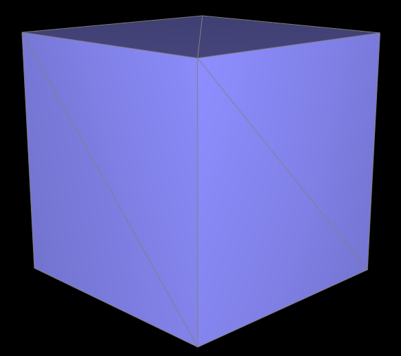
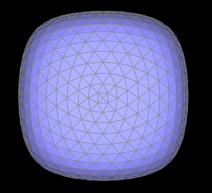

This project focuses on geometric modeling.
First, I built Bezier curves and surfaces using de Casteljau algorithm.
Then I moved on to manipulating triangle meshes through half-edge data structure,
and implemented loop subdivision to get smoother surface.
The de Casteljau method performs linearly interpolates recursively between every pair of two adjacent control points
with parameter t, until it reaches a single point.
We notice that a Bezeir curve of degree n needs n+1 control points.
Also, t is in [0, 1].
Bezier curve with 6 control points:
|
|
|
|
|
|
|
|
|
how you implemented it in order to evaluate Bezier surfaces.
We can evaluate a surface position corresponding to parameters (u, v).
First, we can use de Casteljau to evaluate point u on each row to get the Bezier curves in u.
Let r be the number of rows, then this gives r control points for the "moving" Bezier curve.
Then we use 1D de Casteljau to evaluate point v on th moving curve.
In this way, we could extend de Casteljau algorithm to Bezier surfaces.
|
|
|
I used a while loop to iterate through all the neighbor triangles.
If the current face is not a boundary face,
I found the other two vertices v1 and v2 using Halfedge next and twin operations,
and calculate the area of the triangle as area = (cross(v1 - v, v2 - v).norm()) / 2.
Then I add area times the normal of the current face into weighted_normal.
After the while loop ends, I normalized the weighted_normal and return the unit vector as the vertex normal.
|
|
|
First, I checked whether the edge is on the boundary. If it is, then I just return itself.
If not, I start flipping the edge as following.
The flipping operation can be considered as rotating the inner halfedges counterclockwisely.
So we can draw some diagrams to show the change in the triangle.
From http://15462.courses.cs.cmu.edu/fall2015content/misc/HalfedgeEdgeOpImplementationGuide.pdf
For every element in the modified mesh, including vertices, halfedges, edges, and faces,
I set all of its pointers to the correct element in the modified mesh.
For each half-edge, I updated its next, twin, vertex, edge, and face pointer to the correct element using Halfedge::setNeighbors(...).
Then for each vertex, edge, and face, I set its halfedge pointer.
Finally, I return the updated e0.
|
|
|
The implementation for this part is very similar to part 4 implementation.
First, I checked whether the edge is on the boundary. If it is, then I just return itself.
If not, I start flipping the edge as following.
I created 1 new vertex, 3 new edges, 6 new half-edges, and 2 new faces.
For every element in the modified mesh, including vertices, halfedges, edges, and faces,
I set all of its pointers to the correct element in the modified mesh.
For each half-edge, I updated its next, twin, vertex, edge, and face pointer to the correct element using Halfedge::setNeighbors(...).
Then for each vertex, edge, and face, I set its halfedge pointer.
Also, I set "isNew" to be true for two new edges.
Finally, I return the new vertex.
|  |
|
|
First, I used for loop to compute new positions for all the vertices in the input mesh,
stored them in Vertex::newPosition, and marked "isNew" to be false for all of them.
Second, I iterated through all the edges in the mesh,
computed the midpoint vertex positions associated with edges, store it in Edge::newPosition,
and marked "isNew" to be false for all of them.
Third, I splited every old edge in the mesh byb calling VertexIter HalfedgeMesh::splitEdge(EdgeIter e0)
and update "isNew" for new edges in this function to avoid infinite loop.
Fourth, I flipped any new edge that connects an old and new vertex by calling VertexIter HalfedgeMesh::splitEdge(EdgeIter e0).
Finally, I used a for loop to copy all the new vertex positions into final Vertex::position
and set "isNew" to be false for all the vertices.
As we apply more iterations of loop subdivision on a mesh,
the surface on it will become smoother and smoother,
and sharp corners and edges will be smoothed out
|
|
|
|
|
|
|
|
|
The cube becomes asymmetric after repeated subdivisions
because the diagonal edges on each face of the original cube is not symmetric.
If we use flip and/or split to make each face of the original cube have symmetric edges,
we could get symmetric cube after loop subdivisions.
In the following example, I split the diagonal edge on each face and then perform loop subdivision.
|
|
|
|
|

|
If you are not participating in the optional mesh competition, don't worry about this section!
Here is my partsevenmodel.dae in docs folder:
|
|
I made a mobius band in Blender.
First I add a circle and set the handle type to be "free".
Then I deleted one handle and add a new one with rotation 90 degrees in z-axis.
Then I modified the geometry data to convert the 1D line in to a 3D strip shape.
After that I tilted each of the four handle by 45, 90, 135, and 180 degrees respectively.
Now I get the mobius band and converted the curve into a mesh.
Since we are using triangular modeling method, I need to add a modifier to the mesh to triangularize it.
Finally, I export it as a .dae file and loaded into the GUI.